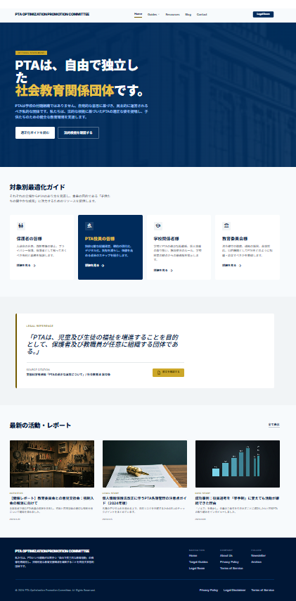

Activities
横浜市地域活動紹介サイトへの掲載
横浜市の地域活動に取り組む団体として紹介されています。地域活動支援・ネットワーク・行政との接点の一つとして位置づけています。

PTAが法律上「自由で独立した社会教育関係団体」であることを踏まえ、 学校とPTAの関係を一次資料・法令・通知に基づいて整理し、 各学校PTAがより自立した運営を行うための検討材料を示します。
PTA Optimization Promotion Committee
現在、全国の小・中・高等学校でPTAは「保護者と教職員が任意で作る団体」として、 子どもたちの健全育成を支える大切な役割を担っています。
しかし実際の現場では、学校とPTAが別の団体であることが十分に意識されず、 「学校とPTAの境界線」が曖昧なまま活動が進められるケースが少なくありません。 特に、学校がPTA会費の徴収・管理・会計・経理、配布物の配布回収までを一手に担っている現状が、 全国的に見られます。これにより保護者の自主性が反映されにくくなり、 保護者間の分断や役員のなり手不足、公平性の欠如といった問題が深刻化しています。
文部科学省が推進する働き方改革では、「学校・教師が担う業務」を3分類として役割分担を明確にしています。
① 基本的には学校以外が担うべき業務
② 学校の業務だが必ずしも教師が担う必要のない業務
③ 教師の業務だが負担軽減が可能な業務
PTA関連業務（会費徴収・管理など）は①に位置づけられていますが、
多くの学校ではその趣旨が十分に活かされていません。
本委員会は、これらの実態を明らかにするため、全国1700の教育委員会に対し法的見解照会を実施し、 約50自治体・全校を対象に公文書開示請求を行いました。これらの一次資料をもとに、 学校とPTAの関係を法令・通知などの観点から整理・検証しています。
PTAが法律上「自由で独立した社会教育関係団体」であることを踏まえ、 各学校PTAがより自立した運営ができる方向性を検討するための参考資料としてまとめています。 詳細な調査結果や一次資料などは本HPにすべて掲載しています。 ご自身の教育委員会・学校のPTA状況と照らし合わせてご覧いただき、 ご意見・ご相談をお寄せいただければ幸いです。
最新の調査結果や資料は、X（旧Twitter）で随時発信しています。
それぞれの立場からPTAのあり方を見直し、本来の目的である「子供たちの健やかな成長」に注力するための視点を整理します。
入退会の自由、説明のあり方、会費徴収、個人情報の扱いなど、保護者として確認すべき論点を整理します。
詳細を見る arrow_forward規約、総会、会計、役員選出、学校との距離感など、持続可能で自立した運営の基礎を整理します。
詳細を見る arrow_forward学校とPTAの法的位置づけ、会費徴収、名簿提供、施設利用など、学校側の関与を法的観点から整理します。
詳細を見る arrow_forwardPTAそのものではなく、学校側の不適切関与をどのように是正すべきかを、通知・条文・実務の順で整理します。
詳細を見る arrow_forward「PTAは、児童及び生徒の福祉を増進することを目的として、 保護者及び教職員が任意に組織する団体である。」
Source Citation
文部科学省通知・社会教育法の位置づけを踏まえた整理
Activities
横浜市の地域活動に取り組む団体として紹介されています。地域活動支援・ネットワーク・行政との接点の一つとして位置づけています。
Research
教育委員会回答、公文書開示資料、学校配布文書、法令・通知をもとに、学校とPTAの関係を検証しています。
Updates
調査経過、制度論点、公開資料、問題提起などをSNS・動画で継続的に発信し、サイト本体と連動させています。